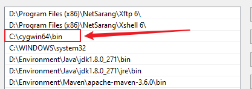
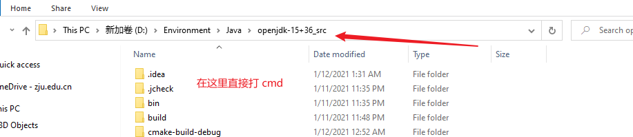
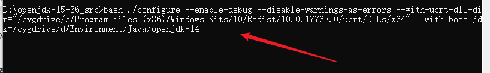
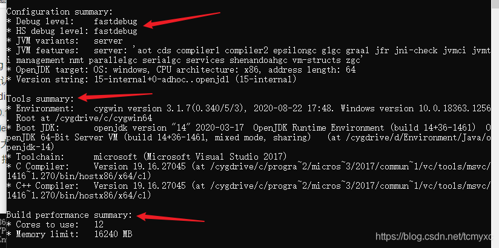

前言
这篇文章写于2021年1月份。
我在Windows 和 Linux 平台上都试着编译过 openjdk，Linux 平台上的一般按照周大大的步骤来，不会有什么问题，不过还是给个建议：使用 Ubuntu18 最佳，因为这样你不需要手动更改 GCC 的版本（Ubuntu18 的 GCC 版本是 7.x，刚好和官方的要求符合），给自己省了点麻烦。当然，如果你是 Linux 使用高手，可以忽略我这一点建议。
在 Windows 平台的建议是：直接编译 openjdk15，原因如下：
- 自身实践。我尝试编译了 openjdk8 到 openjdk15，只有 openjdk15 的编译不需要修改官方的脚本，openjdk13 ，12 都需要修改
make\autoconf\toolchain_windows.m4这个文件，具体可参考这篇文章 - 不需要安装过多的依赖或者软件。只需要 vs2017 英文版（注意是英文版）和 cygwin64，具体原因看这篇文章。很多博客会说需要
freetype这个依赖，但是我在编译的时候并没有用过，在这里供大家参考。
准备工作
软件以及源代码
- openjdk14（下载解压即可，不需要配置环境变量）
- openjdk15 源代码
- vs2017 英文版
- cygwin64
具体下载地址我不再给出，请自行下载
依赖包安装
cygwin64 安装的时候选择即可，至少需要安装：
- autoconf
- zip
- unzip
- make
- tar
其他的依赖可以参考源码下的 doc/building.html 文档
小技巧
- 可以把 cygwin64 加入环境变量，这样可以在 Windows 的 CMD 窗口直接使用 Linux 命令，不过要放在
C:\WINDOWS\system32之前。如下图：
 - 把自己电脑的语言设置成英文，这样你会少看到一些 warning，有强迫症的同志甚至可以把国家和地区改一下
编译
如果你在上文和我一下配置了 cygwin64 的环境变量，那你可以直接在源代码目录下这么干

这样你就直接进入了命令行窗口
生成配置文件
1 | bash ./configure --enable-debug --disable-warnings-as-errors --with-ucrt-dll-dir="/cygdrive/c/Program Files (x86)/Windows Kits/10/Redist/10.0.17763.0/ucrt/DLLs/x64" --with-boot-jdk=/cygdrive/d/Environment/Java/openjdk-14 |
说明：
- –enable-debug 等价于 –with-debug-level=fastdebug，此外还有 release、slowdebug 两个参数，他们是编译级别，默认是 release（发布版）
- –with-ucrt-dll-dir 是指定 DLL 目录，具体为：
"/cygdrive/c/Program Files (x86)/Windows Kits/10/Redist/10.0.17763.0/ucrt/DLLs/x64"，这里是一个映射，/cygdrive/c/Program Files (x86)就是 Windows 的C:\Program Files (x86)目录，具体的目录是我们安装好 VS2017 之后产生的目录，版本号10.0.17763.0可能会有不同，大家自行修改成自己的 - –with-boot-jdk 指定引导 jdk 的安装目录，改成自己的目录即可
截图如下：

如果一切良好，会看到类似于这样的：

如果出现了其他问题，可以参考错误信息，结合官方文档以及合理度娘来解决问题。
编译
按需编译，或者 make all，编译时间在半个小时到一个小时之间
结语
等于学习了《深入理解 Java 虚拟机》第一章，希望不要努力了两天的成果在硬盘里面吃灰。
参考文献
- [1] https://blog.csdn.net/weixin_45040801/article/details/102542213?utm_medium=distribute.pc_relevant_t0.none-task-blog-BlogCommendFromBaidu-1.control&depth_1-utm_source=distribute.pc_relevant_t0.none-task-blog-BlogCommendFromBaidu-1.control
- [2] https://blog.csdn.net/weixin_45040801/article/details/102612042
- [3] https://www.cnblogs.com/zhoujun007/archive/2004/01/13/13406716.html
- [4] 深入理解 Java 虚拟机（第三版）